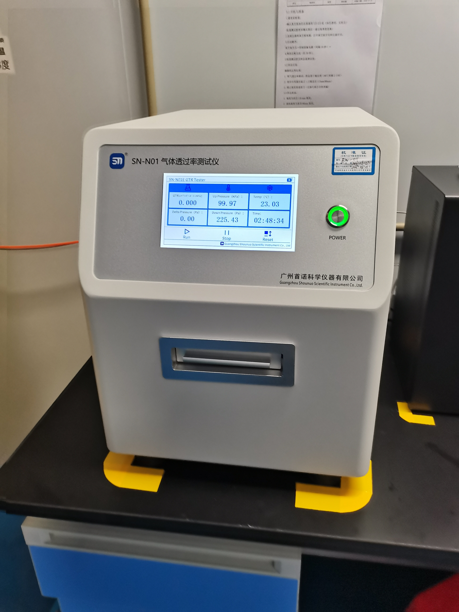

2026 Flexible Packaging Standards: A Complete Guide to OTR & WVTR Barriers

In the global flexible packaging market, "barrier performance" is the single most important factor determining the shelf life and quality of your product. Whether you are packaging premium coffee, high-protein pet food, or ready-to-eat meals, understanding OTR (Oxygen Transmission Rate) and WVTR (Water Vapor Transmission Rate) is no longer optional—it is a business necessity.
At Shenying Packing, we receive many inquiries about these technical metrics. Today, we break down what they are and why they matter for your brand in 2026.
1. What are OTR and WVTR?
OTR (Oxygen Transmission Rate): Measures how much oxygen passes through the packaging material over time. High OTR values can cause oxidation, leading to rancidity in fats, loss of vitamins, and changes in food color.
WVTR (Water Vapor Transmission Rate): Measures the moisture permeability of the material. High WVTR values often lead to caking in powders, loss of crunch in snacks, and microbial growth.
2. Why Your Brand Needs to Know These Numbers
If your packaging has the wrong barrier parameters, your product may spoil long before its expiration date. Choosing the right material structure depends entirely on these requirements:
- For Dry Goods (Nuts/Coffee): You need low WVTR to maintain crunch and freshness.
- For High-Fat Foods (Pet Food/Meat): You need ultra-low OTR to prevent oxidation and rancidity.
3. The Shenying Packing Advantage
At Shenying Packing, we use advanced testing equipment to ensure every batch of our flexible packaging meets your product's specific barrier requirements. We offer:
- Custom Barrier Solutions: Tailored film structures (e.g., AlOx, Metalized PET, or Foil) based on your required OTR/WVTR data.
- Precision Quality Control: Verified testing processes to guarantee consistency.
Summary
Do you know your required OTR/WVTR specifications? Don't guess—let our experts help you optimize your packaging structure for maximum shelf life. Send us your product type, and we will recommend the optimal barrier structure for you.
Ready to optimize your barrier performance?
Contact us for a technical consultation:
📧 Email: may.lee@shenyingpacking.com
💬 WhatsApp: +86 13424643780